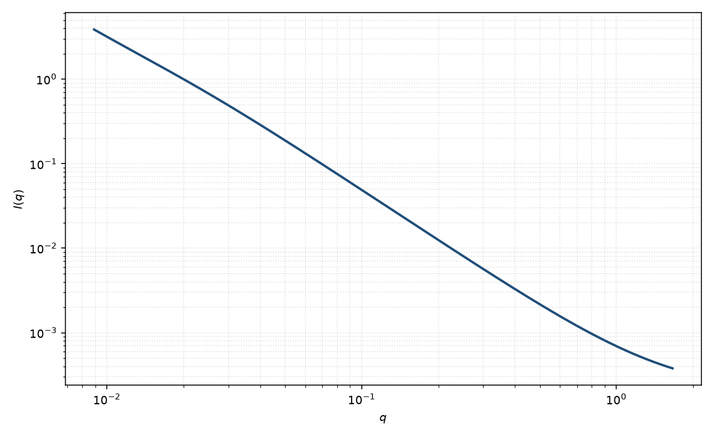

多分散高斯链
polydisperse Gaussian coil
适用场景
工业高分子或未分级样品的 $M_w/M_n$ 明显大于 $1$ 时，对 Debye 函数做 Schulz–Zimm 平均。低 $q$ 的 $R_g$ 接近 $z$ 均，前向散射仍由 $M_w$ 主导。
分布很窄时回到单分散 Debye。排除体积与多分散会混在高 $q$ 尾上，不要两个都自由拟合。
物理图像
Zimm 把不同链长的 Debye 函数按 Schulz 分布积分。多分散参数 $U=M_w/M_n-1$，$z=1/U$。结果仍是闭合式，高 $q$ 仍 $\sim q^{-2}$，但低 $q$ 曲率变缓。
这是分子量多分散，不是空间取向分布。
示意图

核心公式
Schulz–Zimm 多分散 Debye（$U=M_w/M_n-1$，$z=1/U$，$u=q^2 R_g^2/(z+1)$）
$$P(q)=\frac{2}{z(z+1)u^2}\bigl[(1+zu)^{-z}+zu(z+1)-1\bigr].$$$U\to 0$ 回到单分散 Debye。$R_g$ 须声明是哪一种平均。
参数表
| 参数 | 符号 | 含义 | 单位 | 典型范围 |
|---|---|---|---|---|
| 回转半径 | $R_g$ | 分布平均后的回转半径 | Å | 须声明加权 |
| 多分散 | $U$ | $M_w/M_n-1$ | 无量纲 | 窄分布 $<0.2$，宽可 $>1$ |
| 前向散射 | $I(0)$ | 由 $M_w$ 主导 | 与强度单位一致 | 绝对标定 |
| 标度 / 本底 | $\mathrm{scale}$, $B$ | 前置因子与常数本底 | 与强度单位一致 | 实验相关 |
拟合注意
取向：同单分散链。流动取向不是 $U$ 能吸收的。
多分散正是本模型的主题：须与仪器 smearing 分开。磁性标记若与分子量相关，磁 $U$ 可以不同于核 $U$。
可辨识性：$U$ 与 $R_g$ 在只有 Guinier 时完全简并。需要中间 $q$ 的 Debye 弯曲。排除体积不要用 $U$ 去冒充。
相近模型
参考文献
- Zimm, B. H. The scattering of light and the radial distribution function of high polymer solutions. J. Chem. Phys. 1948, 16, 1093–1099. DOI: 10.1063/1.1746738
- Debye, P. J. Phys. Colloid Chem. 1947, 51, 18–32. DOI: 10.1021/j150451a002